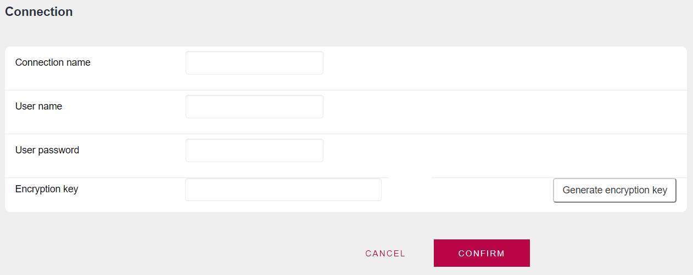

GAM - Repository Connections
The purpose of the GeneXus Access Manager Repository connection is to add a security level to the GAM application. Therefore, to access the GAM application, you need to establish a Repository connection first. It's like having an API key.
Then, the GAM API methods execute only after the GAM Repository connection is successfully established. More than one connection can be defined for each Repository. This is particularly interesting when many Web or SD Applications access the same GAM Repository. In this case, the administrator can control the access to the GAM by managing the Repository connections defined in the database.
The user associated with the Repository connection is called GAM Connection User.
The connection data is saved in the connection.gam file, under the web directory of the GeneXus model.
Considerations about the GAM Repository Connections
1. When security is set in the Knowledge Base (Enable Integrated Security Property = Yes) or, specifically, any time a new GAM database has to be created by GeneXus, a GAM Repository Connection is defined by default. In this case, the GAM connection username is set by default with the name of the active version.
This information is generated by the GX IDE in the GAM DB for prototyping purposes. Nevertheless, the GAM connection user can be changed as desired before the GAM database is created (see GeneXus Administration of GAM Repository for more information).
Figure 1 shows the default Repository Connection created in the GAM DB, for a KB called "TestRestAuthorization".
Figure 1.
2. One possible scenario is to have N applications using the same GAM Repository.

Once a GAM database has been defined, for any other environment or KB that needs to use the same GAM Database you have to set existing values for Connection User Name Property and Connection User Password Property (the same as Administrator User Name Property). The best option is to define and set a different Repository Connection for each application in this case. This is for performance and security reasons.
The Repository ID property has to be the same in all KBs.
A new connection can be created using the GAM API. The GAM Backoffice also provides an easy way to manage Repository Connections, by clicking on the "Repository Connections" link and accessing "GAMExampleWWconnections", as shown in the figures.
Figure 2 shows the interface of "Add new GAM Repository Connection" in the GAM backend.

Figure 2.
After the GAM Connection has been created in the GAM database, you can generate a new key or associate the current key. All connections are kept in the database and not in the connection.gam file, as was the case in previous GeneXus versions. The connection.gam file only contains the key that can have N connections in the database.
Figure 3.
Figure 3 shows how to associate a key with the connection created. You can associate the current key ("Use current key" button) to add a new connection to the existing connections; generate one automatically ("Use automatic key" button) to create a new connection.gam with the entire XML; or add a key manually.
You can get the content of the connection.gam by pressing the FILE button, and then copy the XML generated to the new connection.gam.
Additionally, you can save the key ("Save key" button), remove a key ("Delete" button) or delete the current connection ("Delete connection" button).
You can only have one connection per repository with the same connection key.
In summary:
- A GAM Repository connection is determined by a Connection User, and is used to establish a connection to the GAM database Repository each time the GAM API methods are used.
- The GAM connection information is stored in the GAM database and has to be set under the connection.gam file, which has to be included in the server deployment.
- A GAM database may have n GAM Repository Connections; each Repository Connection may be used from a different Knowledge Base or environment that uses the same GAM database.
- The Repository ID is what identifies the repository and has to be the same in all KBs that use the same GAM Repository.
- Several Repositories can be stored in the same GAM database, and in this case you need to define a connection for each Repository, updating the connection.gam file accordingly. See HowTo: Creating New Repositories using GAM for details.
- Since V17 Upgrade #5, GAM Connection Key can be specified via Environment Variable "GX_GAMCONNECTIONKEY". SAC 49841.
See Also
HowTo: Using the same GAM Database by different applications
GeneXus Administration of GAM Repository
HowTo: Get and Set GAM Repository Connections
HowTo: Get GAM Repository connection information and create a connection file